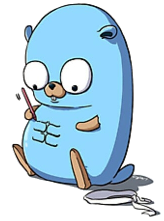

dark mode
jesse waite
About
I am a full stack engineer with professional development experience in embedded systems and cloud native technology for critical infrastructure, industrial control, and monitoring. I am also a proud coding mentor, ML/NLP security researcher, DevSecOps disciple, and a servant-leader who values strong teams and organizational ownership.
We are defined solely by the ladders we leave behind for others to follow, and I am grateful to those who probably didn't know that anyone would do so.

Languages and Tech

- Golang, C#/.NET, Bash, Javascript, Python, C/C++
- Docker, Kubernetes, Tilt, Istio, and friends, AWS
- PyTorch, Word2Vec, Numpy
- Ubuntu, Red Hat, Raspbian, Arduino, PIC32 / FreeRTOS
Experience
-
Software EngineerSchweitzer Engineering Laboratories
- C# Synchrowave Operations developer and platform security evaluator
- Golang co-developer of event monitor/uploader cloud app for traversing OT boundaries, secured by RFC-8628
-
Power System Security ResearcherWashington State University
- IEEE published primary researcher and developer of MITRE ATT&CK modeling using ELK, Python, and Markovian risk estimation
-
Cyber Intelligence ResearcherIndependent
- IR methods for the Allen Institute Covid-19 research dataset using vector models
- CHEETAH creator, a counter-misinformation system for analyzing content polarization and misinformation fingerprinting
- ABLE-ITEM creator, a content historian for aggregating historical datasets from deep-web, social, and aggregated search apis
- Rank-based classification methods for user identification from language samples, e.g. Enron data.
Education
-
Master's Thesis in Computer Science Summa Cum LaudeWashington State University
- Thesis in graphical anomaly-detection for process mining applications
- Interdisciplinary emphases in network science, machine learning, and security
-
Bachelor of Science, Computer Science Summa Cum LaudeWashington State University
- Dual track in systems programming and machine learning
- NSF grant recipient and SLIDE creator, an eye-tracking based language decoder for ALS patients
-
Udemy Certifications (love these)Certifications
Leadership
-
Youth MentorPullman, SEL
- Coding/builder/trades youth mentor
- Intro Arduino, Raspberry-Pi, and game-dev tutoring
-
Embedded Systems Course DeveloperIndependent
- Developer of undergraduate lectures targeting the PIC32 mcu and peripheral devices
- Completed C/assembly driver suite for 9dof IMUs, lighting, motor control, and acoustic units over I2C, SPI, and serial protocols.
-
WSU Senior Design MentorWSU External
- Corporate-representative WSU senior design project mentor
-
AAC DeveloperWSU Team Gleason
- Author of Simple Language Inference Decoding Engine (SLIDE) for decoding language from eye-trace data using gradient-based dynamic programming and heuristic search.
References
- Schweitzer Engineering Labs
- MITRE Corp
- Alphabet